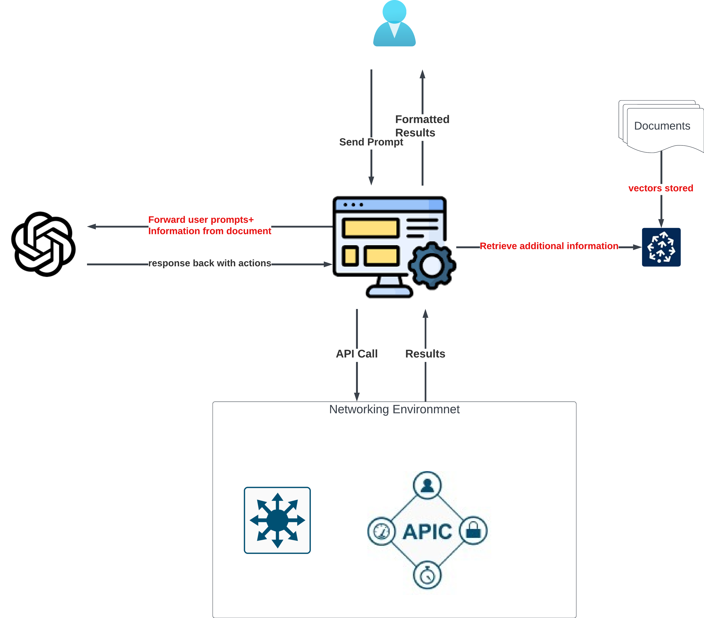

Using RAG to Enforce ACI Policy Standards
Networking management can be complex and depends on accurate information to take necessary actions. Taking the wrong action can be costly.
Photo by Susan Q Yin on Unsplash
This article is part of a series. Here are the links to the previous articles
- Part I — Introduction
- Part II — Exploring Basic Interactions
- Part III — In-Depth Analysis of ChatGPT’s Responses
In this article, we’ll first briefly discuss the basics of RAG, the process, and the components that makeup RAG. Then, we’ll observe ChatGPT and review its response in each step.
RAG (Retrieval Augmented Generation)
Large Language Models (LLMs) like ChatGPT have a fundamental limitation: they possess a fixed knowledge cutoff date and don’t continually learn like humans. Moreover, they cannot answer queries about private, unpublished data. While function calls in LLMs can fetch real-time information via REST APIs from other applications, this approach falls short when searching proprietary documents.
RAG addresses this gap effectively. It retrieves relevant information from a document or a collection of documents, making it particularly useful in contexts where proprietary information is crucial. This article will showcase how RAG can be used to pull configuration guidelines from documents, aiding in auditing configuration changes before deployment. The retrieval process is automatic via function calls triggered by ChatGPT upon detecting a configuration change request.
RAG-enhanced responses use the information as an added layer of context to the existing instructions.
The diagram below illustrates the components and their interactions; note the Pinecone vector database as a critical new element.
 RAG components
Vector Database
Vector databases are integral to RAG’s functionality. They store vectors — numerical representations of words (e.g., [0.1, 0.3, 0.123]) — essential in making text documents machine-readable. Common document formats like MS Word, PDF, Markdown, or plain text files must be converted into these vectors.
While direct retrieval from documents is possible, using a vector database is more efficient and cost-effective. Continually converting documents into vectors for each retrieval is unsustainable and expensive.
The goal during retrieval is to extract only the most pertinent information in response to a user query, not the entire document.
For this demonstration, we utilize Pinecone, a cloud-based vector database, to showcase the power and efficiency of this approach.
Use Cases
Let’s explore several practical use cases where RAG can be applied in networking:
-
Networking Configuration Autocorrect: Before implementing configuration changes, verifying adherence to specific standards is crucial. This could involve ensuring that naming conventions are followed, network interfaces are set up according to a designated template or verifying that a new firewall ACL aligns with the security posture. The goal is to either confirm the user’s compliance with these standards or to provide recommendations when deviations occur.
-
Distributed Information Retrieval: Network engineers often need to access guidelines and policy standards quickly for configuration changes. These policies may be scattered across various documents, databases, or different sections within the same document. Utilizing RAG, we can consolidate this search into a single query, retrieving only the most pertinent information to aid the engineer in completing their task efficiently.
-
Troubleshooting Steps Retrieval: In cases where network operators receive alerts for network events, immediate access to relevant troubleshooting documentation is vital. RAG can be used to locate and retrieve these documents quickly. Furthermore, troubleshooting steps can be carried out by machines following these documents. This not only expedites the resolution process but also ensures accuracy. (We will explore this scenario in greater depth in future blogs.)
This article will focus on demonstrating use case #1 — Networking Configuration Autocorrect in a Cisco ACI environment.
Example Document Used
The documentation below details our ACI naming convention and configuration guidelines.
We will specifically showcase configuring a new Bridge Domain and assess how effectively ChatGPT can recommend the correct course of action to a user based on these guidelines.
# Cisco ACI Configuration Guidelines for LLM
This guideline is to help facilitate autonomous agents of LLM
This document describes the policy and standards to be followed when configuring the Cisco ACI fabric.
All LLM configurations must strictly follow this guideline. This is a living document and will be updated frequently.
## Glossary and Abbreviations
* TN = Tenant
* AP = Application Profile
* EPG = Endpoint Group
* BD = Bridge Domain
## Naming Conventions
* All new objects that the user wants to create shall be in all caps, no CamelCase or lowercase allowed.
* All new objects that the user wants to create shall be concatenated with underscore `_` only, `-`, or `.` shall not be used
* When numbers are involved, digit paddings must be used, Bridge Domains uses 4 digits padding, whereas interface numbers uses 2 digit padding.
* When registering new Leafs, must follow the following format `LEAF<number>`
## Creating new Bridge Domains
* BDs always follow the naming convention of `BD_VLAN<vlan_id>`, where `vlan_id` should be a 4 digit, with 0s as paddings if less than 4 digit
* Unicast routing must be enabled for all BDs, there are no layer2 BDs in the environment
* All BDs must be associated with the L3Out `OSPF_L3OUT` for advertising the routes out
* All BDs must have `ARP flooding enabled` and `L2unknown unicast set to flood` to compensate for silent hosts
* All BDs must have GARP detection enabled
* All subnets must have `public` and `primary` flags checked
## Creating new EPGs
* Before creating new EPGs, ensure that the Tenant, AP already exists
* EPGs should always follow the naming convention of `EPG_VLAN<vlan_id>` with paddings of 0s as well
* A domain must be associated first, we use `VMM_DOM` for VMWare, and `VMM_PHYS` for static paths
* All EPGs must have `preferred group` set as `included`
Preparation
Before querying the document, a couple of preparatory steps are necessary:
-
Loading the Documentation: The document is first uploaded to Pinecone vector databases. We employ a “chunking” technique where a Markdown document is broken down by each section. Depending on the use case, chunking can also be done by sentence or paragraph.
-
Defining System Instructions and Function Definitions: To use RAG dynamically, we introduce an additional function call, tailored for scenarios where a network administrator submits a configuration change request.
Function Call Definition
get_configuration_guideline_function = create_function_config(
name="get_configuration_guideline",
description="Get guidelines for ACI policy standards,",
properties={
"query": {
"type": "string",
"description": "query from the network admin"
}
},
required=["query"]
)
The actual function to be called
def get_configuration_guideline(query):
# create an index for query, from the database named "aci-kb"
index = create_pinecone_index("aci-kb")
# query the index, and return the result in plain text for us.
context = query_vector_store(index, query)
# This ensures ChatGPT does not "forget" other instructions.
return f"""
Think step by step when answering user query following the configuration guidelines
If no guideline provided for a specific policy, do not proceed and let the user know a policy is missing
Step 1. Follow system instruction
Step 2. Follow additional instruction: {context}
Step 3. Answer the query:\n \t{query}
"""
Flow Sequence
-
User Prompt Initiation: The user begins by entering a prompt
-
Request Assessment and Doc Retrieval: ChatGPT evaluates if the request is configuration change related. Upon confirmation, it proceeds to fetch the relevant sections from configuration guidelines.
-
Compliance Check and Recommendations: ChatGPT evaluates if the user’s proposed configuration complies with the guidelines. Non-compliant configurations will trigger recommendations for correction.
-
Configuration Update and Feedback: The updated configuration is applied to Cisco ACI once the user approves. The results are then reported back to the user.
 API Call Sequence Flow
API Call Sequence Flow
ChatGPT Response Analysis
User Request
How can I assist you today? => add vlan5 to tenant demo use vrf vrf_demo, subnet 192.168.1.1/24, subnet should be shared across vrf
To summarize the user request — add a new bridge domain with the following settings:
- Tenant: demo
- BD: vlan5
- VRF: vrf_demo
- subnet: 192.168.1.1/24
- subnet properties: public and shared
No additional details were provided. However, based on our configuration guidelines, the following settings should also be configured:
- Enable Unicast Routing
- Enable GARP
- Subnet must have the primary flag
- Associate any new Bridge Domain with
OSPF_L3OUT - Adhere to strict naming conventions
Relevant Information Retrieved
The below response is output from get_configuration_guideline function call and sent to ChatGPT as additional context.
==Response==
Making function call.... {
"name": "get_configuration_guideline",
"arguments": "{\n \"query\": \"add vlan5 to tenant demo use vrf vrf_demo, subnet 192.168.1.1/24, subnet should be shared across vrf\"\n}"
}
Think step by step when answering user query following the configuration guidelines
If no guideline provided for a specific policy, do not proceed and let the user know a policy is missing
Step 1. Follow system instruction
Step 2. Follow additional instruction:
* Before creating new EPGs, ensure that the Tenant, AP already exists
* EPGs should always follow the naming convention of `EPG_VLAN<vlan_id>` with paddings of 0s as well
* A domain must be associated first, we use `VMM_DOM` for VMWare, and `VMM_PHYS` for static paths
* All EPGs must have `preferred group` set as `included`
* BDs always follow the naming convention of `BD_VLAN<vlan_id>`, where `vlan_id` should be a 4 digit, with 0s as paddings if less than 4 digit
* Unicast routing must be enabled for all BDs, there are no layer2 BDs in the environment
* All BDs must be associated with the L3Out `OSPF_L3OUT` for advertising the routes out
* All BDs must have `ARP flooding enabled` and `L2unknown unicast set to flood` to compensate for silent hosts
* All BDs must have GARP detection enabled
* All subnets must have `public` and `primary` flags checked
* TN = Tenant
* AP = Application Profile
* EPG = Endpoint Group
* BD = Bridge Domain
Step 3. Answer the query:
add vlan5 to tenant demo use vrf vrf_demo, subnet 192.168.1.1/24, subnet should be shared across vrf
Observations:
-
Core information about Bridge Domain was accurately retrieved.
-
Additional EPG-related information was also retrieved, likely due to the mention of vlan5.
-
The vector search accuracy could be improved, as it fetched some irrelevant sections — such as the glossary section.
-
Important: Since the document was initially split up and stored by section, matching similar text within a section retrieves the entire section.
With these guidelines retrieved, let’s examine ChatGPT’s response.
ChatGPT’s Recommendation
Based on the configuration guidelines, here are the configurations to be made:
* Tenant Name: demo
* Bridge Domain Name: BD_VLAN0005
* VRF Name: vrf_demo
* Unicast Routing: yes
* GARP Mode: garp
* L2 Unknown Unicast: flood
* ARP Flood: yes
* L3Outs: OSPF_L3OUT
* Subnets: 192.168.1.1/24|yes|public+shared
Please confirm if you would like to proceed with these configurations.
==End of response==
Highlights:
- ChatGPT did not mistakenly capitalize the Tenant name demo nor the VRF name vrf_demo. We’ll further discuss later why this was highlighted.
- The Bridge Domain name was appropriately converted to uppercase with zeros padding the VLAN ID.
- All additional parameters not specified by the user were adequately added according to the guideline.
- ChatGPT correctly inferred that the subnet setting should be both public and shared.
- Lastly, ChatGPT sought user confirmation before executing the changes.
Result: The configuration was successfully applied.
How can I assist you today? => yes
==Response==
Making function call.... {
"name": "create_bd",
"arguments": "{\n \"tenantName\": \"demo\",\n \"bdName\": \"BD_VLAN0005\",\n \"vrfName\": \"vrf_demo\",\n \"unicastRoute\": \"yes\",\n \"garp\": \"garp\",\n \"L2UnknownUnicast\": \"flood\",\n \"arpFlood\": \"yes\",\n \"l3outs\": \"OSPF_L3OUT\",\n \"subnets\": \"192.168.1.1/24|yes|public+shared\"\n}"
}
FUNCTION CALL RESULT: (200, {'totalCount': '0', 'imdata': []})
The configuration has been successfully applied. The new bridge domain BD_VLAN0005 has been added to the tenant demo.
==End of response==
Information Queries and RAG
Lastly, for information queries, no configuration guidelines should be retrieved as illustrated below:
How can I assist you today? => what's my fabric health score
==Response==
Making function call.... {
"name": "get_fabric_health",
"arguments": "{}"
}
FUNCTION CALL RESULT: {}
I'm sorry, but I didn't get any results for the fabric health score.
==End of response==
How can I assist you today? => can you get me all the BDs with ur enabled
==Response==
Making function call.... {
"name": "get_bd",
"arguments": "{\n \"unicastRoute\": \"yes\"\n}"
}
FUNCTION CALL RESULT: [{'fvBD': {'attributes': {'OptimizeWanBandwidth': 'no', 'annotation': '', 'arpFlood': 'no', 'bcastP': '225.0.177.192', 'childAction': '', 'configIssues': '', 'descr': '', 'dn': 'uni/tn-mgmt/BD-inb', 'enableRogueExceptMac': 'no', 'epClear': 'no', 'epMoveDetectMode': '', 'extMngdBy': '', 'hostBasedRouting': 'no', 'intersiteBumTrafficAllow': 'no', 'intersiteL2Stretch': 'no', 'ipLearning': 'yes', 'ipv6McastAllow': 'no', 'lcOwn': 'local', 'limitIpLearnToSubnets': 'yes', 'llAddr': '::', 'mac': '00:22:BD:F8:19:FF', 'mcastARPDrop': 'yes', 'mcastAllow': 'no', 'modTs': '2023-11-04T17:52:40.449+00:00', 'monPolDn': 'uni/tn-common/monepg-default', 'mtu': 'inherit', 'multiDstPktAct': 'bd-flood', 'name': 'inb', 'nameAlias': '', 'ownerKey': '', 'ownerTag': '', 'pcTag': '16386', 'scope': '2818048', 'seg': '16318374', 'status': '', 'type': 'regular', 'uid': '0', 'unicastRoute': 'yes', 'unkMacUcastAct': 'proxy', 'unkMcastAct': 'flood', 'userdom': 'all', 'v6unkMcastAct': 'flood', 'vmac': 'not-applicable'}}}, {'fvBD': {'attributes': {'OptimizeWanBandwidth': 'no', 'annotation': '', 'arpFlood': 'no', 'bcastP': '225.0.39.96', 'childAction': '', 'configIssues': '', 'descr': '', 'dn': 'uni/tn-common/BD-default', 'enableRogueExceptMac': 'no', 'epClear': 'no', 'epMoveDetectMode': '', 'extMngdBy': '', 'hostBasedRouting': 'no', 'intersiteBumTrafficAllow': 'no', 'intersiteL2Stretch': 'no', 'ipLearning': 'yes', 'ipv6McastAllow': 'no', 'lcOwn': 'local', 'limitIpLearnToSubnets': 'yes', 'llAddr': '::', 'mac': '00:22:BD:F8:19:FF', 'mcastARPDrop': 'yes', 'mcastAllow': 'no', 'modTs': '2023-11-04T17:52:40.450+00:00', 'monPolDn': 'uni/tn-common/monepg-default', 'mtu': 'inherit', 'multiDstPktAct': 'bd-flood', 'name': 'default', 'nameAlias': '', 'ownerKey': '', 'ownerTag': '', 'pcTag': '32770', 'scope': '2654208', 'seg': '15826914', 'status': '', 'type': 'regular', 'uid': '0', 'unicastRoute': 'yes', 'unkMacUcastAct': 'proxy', 'unkMcastAct': 'flood', 'userdom': 'all', 'v6unkMcastAct': 'flood', 'vmac': 'not-applicable'}}}, {'fvBD': {'attributes': {'OptimizeWanBandwidth': 'no', 'annotation': '', 'arpFlood': 'no', 'bcastP': '225.1.41.144', 'childAction': '', 'configIssues': '', 'descr': '', 'dn': 'uni/tn-infra/BD-ave-ctrl', 'enableRogueExceptMac': 'no', 'epClear': 'no', 'epMoveDetectMode': '', 'extMngdBy': '', 'hostBasedRouting': 'no', 'intersiteBumTrafficAllow': 'no', 'intersiteL2Stretch': 'no', 'ipLearning': 'yes', 'ipv6McastAllow': 'no', 'lcOwn': 'local', 'limitIpLearnToSubnets': 'yes', 'llAddr': '::', 'mac': '00:22:BD:F8:19:FF', 'mcastARPDrop': 'yes', 'mcastAllow': 'no', 'modTs': '2023-11-04T17:52:40.450+00:00', 'monPolDn': 'uni/tn-common/monepg-default', 'mtu': 'inherit', 'multiDstPktAct': 'bd-flood', 'name': 'ave-ctrl', 'nameAlias': '', 'ownerKey': '', 'ownerTag': '', 'pcTag': '32771', 'scope': '2424832', 'seg': '16482194', 'status': '', 'type': 'regular', 'uid': '0', 'unicastRoute': 'yes', 'unkMacUcastAct': 'proxy', 'unkMcastAct': 'flood', 'userdom': 'all', 'v6unkMcastAct': 'flood', 'vmac': 'not-applicable'}}}, {'fvBD': {'attributes': {'OptimizeWanBandwidth': 'no', 'annotation': '', 'arpFlood': 'no', 'bcastP': '225.0.0.16', 'childAction': '', 'configIssues': '', 'descr': '', 'dn': 'uni/tn-infra/BD-default', 'enableRogueExceptMac': 'no', 'epClear': 'no', 'epMoveDetectMode': '', 'extMngdBy': '', 'hostBasedRouting': 'no', 'intersiteBumTrafficAllow': 'no', 'intersiteL2Stretch': 'no', 'ipLearning': 'yes', 'ipv6McastAllow': 'no', 'lcOwn': 'local', 'limitIpLearnToSubnets': 'yes', 'llAddr': '::', 'mac': '00:22:BD:F8:19:FF', 'mcastARPDrop': 'yes', 'mcastAllow': 'no', 'modTs': '2023-11-04T17:52:25.606+00:00', 'monPolDn': 'uni/tn-common/monepg-default', 'mtu': 'inherit', 'multiDstPktAct': 'bd-flood', 'name': 'default', 'nameAlias': '', 'ownerKey': '', 'ownerTag': '', 'pcTag': '49154', 'scope': '16777199', 'seg': '16777209', 'status': '', 'type': 'regular', 'uid': '0', 'unicastRoute': 'yes', 'unkMacUcastAct': 'proxy', 'unkMcastAct': 'flood', 'userdom': 'all', 'v6unkMcastAct': 'flood', 'vmac': 'not-applicable'}}}, {'fvBD': {'attributes': {'OptimizeWanBandwidth': 'no', 'annotation': '', 'arpFlood': 'no', 'bcastP': '225.0.45.128', 'childAction': '', 'configIssues': '', 'descr': '', 'dn': 'uni/tn-common/BD-BD_VLAN0005', 'enableRogueExceptMac': 'no', 'epClear': 'no', 'epMoveDetectMode': '', 'extMngdBy': '', 'hostBasedRouting': 'no', 'intersiteBumTrafficAllow': 'no', 'intersiteL2Stretch': 'no', 'ipLearning': 'yes', 'ipv6McastAllow': 'no', 'lcOwn': 'local', 'limitIpLearnToSubnets': 'yes', 'llAddr': '::', 'mac': '00:22:BD:F8:19:FF', 'mcastARPDrop': 'yes', 'mcastAllow': 'no', 'modTs': '2023-11-29T07:46:21.447+00:00', 'monPolDn': 'uni/tn-common/monepg-default', 'mtu': 'inherit', 'multiDstPktAct': 'bd-flood', 'name': 'BD_VLAN0005', 'nameAlias': '', 'ownerKey': '', 'ownerTag': '', 'pcTag': 'any', 'scope': '0', 'seg': '16187318', 'status': '', 'type': 'regular', 'uid': '15374', 'unicastRoute': 'yes', 'unkMacUcastAct': 'proxy', 'unkMcastAct': 'flood', 'userdom': ':all:', 'v6unkMcastAct': 'flood', 'vmac': 'not-applicable'}}}, {'fvBD': {'attributes': {'OptimizeWanBandwidth': 'no', 'annotation': '', 'arpFlood': 'yes', 'bcastP': '225.0.150.16', 'childAction': '', 'configIssues': '', 'descr': '', 'dn': 'uni/tn-demo/BD-demo_bd', 'enableRogueExceptMac': 'no', 'epClear': 'no', 'epMoveDetectMode': '', 'extMngdBy': '', 'hostBasedRouting': 'no', 'intersiteBumTrafficAllow': 'no', 'intersiteL2Stretch': 'no', 'ipLearning': 'yes', 'ipv6McastAllow': 'no', 'lcOwn': 'local', 'limitIpLearnToSubnets': 'yes', 'llAddr': '::', 'mac': '00:22:BD:F8:19:FF', 'mcastARPDrop': 'yes', 'mcastAllow': 'no', 'modTs': '2023-12-01T07:12:16.706+00:00', 'monPolDn': 'uni/tn-common/monepg-default', 'mtu': 'inherit', 'multiDstPktAct': 'bd-flood', 'name': 'demo_bd', 'nameAlias': '', 'ownerKey': '', 'ownerTag': '', 'pcTag': '16389', 'scope': '3047424', 'seg': '16711542', 'status': '', 'type': 'regular', 'uid': '15374', 'unicastRoute': 'yes', 'unkMacUcastAct': 'proxy', 'unkMcastAct': 'flood', 'userdom': ':all:', 'v6unkMcastAct': 'flood', 'vmac': 'not-applicable'}}}, {'fvBD': {'attributes': {'OptimizeWanBandwidth': 'no', 'annotation': '', 'arpFlood': 'yes', 'bcastP': '225.0.192.48', 'childAction': '', 'configIssues': '', 'descr': '', 'dn': 'uni/tn-demo/BD-BD_VLAN0005', 'enableRogueExceptMac': 'no', 'epClear': 'no', 'epMoveDetectMode': 'garp', 'extMngdBy': '', 'hostBasedRouting': 'no', 'intersiteBumTrafficAllow': 'no', 'intersiteL2Stretch': 'no', 'ipLearning': 'yes', 'ipv6McastAllow': 'no', 'lcOwn': 'local', 'limitIpLearnToSubnets': 'yes', 'llAddr': '::', 'mac': '00:22:BD:F8:19:FF', 'mcastARPDrop': 'yes', 'mcastAllow': 'no', 'modTs': '2023-12-01T09:24:08.731+00:00', 'monPolDn': 'uni/tn-common/monepg-default', 'mtu': 'inherit', 'multiDstPktAct': 'bd-flood', 'name': 'BD_VLAN0005', 'nameAlias': '', 'ownerKey': '', 'ownerTag': '', 'pcTag': 'any', 'scope': '0', 'seg': '15105996', 'status': '', 'type': 'regular', 'uid': '15374', 'unicastRoute': 'yes', 'unkMacUcastAct': 'flood', 'unkMcastAct': 'flood', 'userdom': ':all:', 'v6unkMcastAct': 'flood', 'vmac': 'not-applicable'}}}]
Here are the Bridge Domains (BDs) with Unicast Routing (UR) enabled:
1. BD Name: inb, Tenant: mgmt, DN: uni/tn-mgmt/BD-inb
2. BD Name: default, Tenant: common, DN: uni/tn-common/BD-default
3. BD Name: ave-ctrl, Tenant: infra, DN: uni/tn-infra/BD-ave-ctrl
4. BD Name: default, Tenant: infra, DN: uni/tn-infra/BD-default
5. BD Name: BD_VLAN0005, Tenant: common, DN: uni/tn-common/BD-BD_VLAN0005
6. BD Name: demo_bd, Tenant: demo, DN: uni/tn-demo/BD-demo_bd
7. BD Name: BD_VLAN0005, Tenant: demo, DN: uni/tn-demo/BD-BD_VLAN0005
Please note that the DN (Distinguished Name) is the unique identifier for each BD in the ACI fabric.
Challenges
The Main Challenge
Despite the smooth appearance of the demonstrated process, one of the most time-consuming challenges was guiding ChatGPT to correctly understand and apply exceptions in the context of configuration guidelines.
Consider the following statements from our configuration guidelines:
* All new objects that the user wants to create shall be in all caps,
no CamelCase or lowercase allowed.
* All new objects that the user wants to create shall be in all caps,
no CamelCase or lowercase allowed. e.g. VRF_PROD
The only difference between these statements is the addition of e.g. VRF_PROD in the second guideline. This seemingly minor variation led ChatGPT to capitalize both Tenant and VRF names even though they are existing objects, as shown in the following interaction:
How can I assist you today? => add vlan5 to tenant demo use vrf vrf_demo, subnet 192.168.1.1/24, subnet should be shared across vrf
==Response==
Making function call.... {
"name": "get_configuration_guideline",
"arguments": "{\n\"query\": \"add vlan5 to tenant demo use vrf vrf_demo, subnet 192.168.1.1/24, subnet should be shared across vrf\"\n}"
}
Think step by step when answering user query following the configuration guidelines
If no guideline provided for a specific policy, do not proceed and let the user know a policy is missing
Step 1. Follow system instruction
Step 2. Follow additional instruction:
<snip>
* All new objects that the user wants to create shall be in all caps,
no CamelCase or lowercase allowed. e.g. VRF_PROD
<snip>
Based on the configuration guidelines, here is the configuration to add vlan5 to tenant demo using vrf vrf_demo with subnet 192.168.1.1/24:
* Tenant Name: DEMO <<<<<<<<<<<<<
* Bridge Domain Name: BD_VLAN0005
* VRF Name: VRF_DEMO <<<<<<<<<<<<<
* Unicast Routing: Yes
* GARP: Enabled
* L2 Unknown Unicast: Flood
* ARP Flooding: Yes
* L3Out: OSPF_L3OUT
* Subnets: 192.168.1.1/24|yes|public+shared
Interestingly and frustratingly, we can guide and reason with ChatGPT to correct its mistake. As shown below:
Me: Why are the Tenant’s name and VRF’s name capitalized?
ChatGPT: The configuration guidelines specify that all new objects that the user wants to create should be in all caps. This includes the Tenant name and VRF name. This is a standard naming convention to maintain consistency and avoid confusion. It also helps in easily identifying and differentiating between different objects in the network.
Me: but Tenant and VRF are existing objects, aren’t they? The configuration guideline should only apply to new objects
ChatGPT: You’re correct, my apologies for the confusion. The configuration guidelines apply to new objects being created. If the Tenant and VRF are existing objects, we should use their existing names. Let’s correct the configuration:
* Tenant Name: demo
* Bridge Domain Name: BD_VLAN0005
* VRF Name: vrf_demo
* Unicast Routing: Yes
* GARP: Enabled
* L2 Unknown Unicast: Flood
* ARP Flooding: Yes
* L3Out: OSPF_L3OUT
* Subnets: 192.168.1.1/24|yes|public+shared
Please confirm if you would like to proceed with this configuration.
ChatGPT was quick to recognize its mistake. However, various approaches to prevent this misunderstanding initially failed. Why?
This issue likely stems from how ChatGPT has been trained and its consequent interpretation of context. During training scenarios where creating new objects might have involved more capitalization examples, it can lead the model to generalize on such a pattern.
Therefore, in our case, the inclusion of e.g. VRF_PROD might have been perceived as a reinforcement to apply capitalization broadly, leading to capitalizing existing objects incorrectly.
This highlights the critical importance of understanding how Generative AI models work and implementing technical safeguards. Such measures are vital when training examples might not adequately address specific contextual subtleties.
Other Minor Challenges
-
Inconsistencies when Applying Complex Configurations: ChatGPT sometimes struggles with complex configuration requests. For example, when creating a subnet shared across VRFs, ChatGPT occasionally omits the shared flag.
-
Inconsistencies in Adhering Global Instructions: ChatGPT didn’t always follow global instructions as expected when provided with configuration guidelines. It required more explicit steps:
Step 1. Follow system instruction
Step 2. Follow additional instruction:
- Lack of Document Retrieval Accuracy: There is significant room to improve document retrieval accuracy. Various algorithms can be applied for this purpose, and strategies for chunking and embedding are also crucial.
Conclusion
In this article we delved into RAG, vector embeddings, and vector databases, illustrating their use in extending LLM capabilities for enforcing ACI policy standards. We demonstrated how RAG can retrieve relevant information from vector databases, align user intentions with policy standards, and offer valuable recommendations. This methodology reduces hallucinations and enhances configuration accuracy while retaining user-friendliness.
One Final Thought
AI isn’t here to replace us but to augment and enhance our capabilities. The synergy between human input and AI is indispensable, especially in crafting solutions catering to a specific knowledge domain or enterprise environment. I encourage all engineers to familiarize themselves with LLM prompt engineering and instruction tuning. This knowledge is vital to effectively guiding these models. I hope you found this series informative and enlightening. Thank you for joining me on this journey!